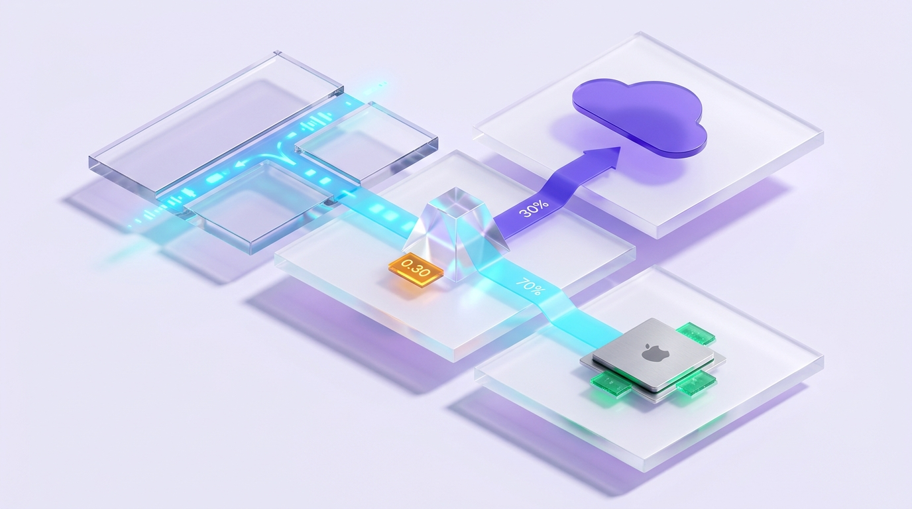
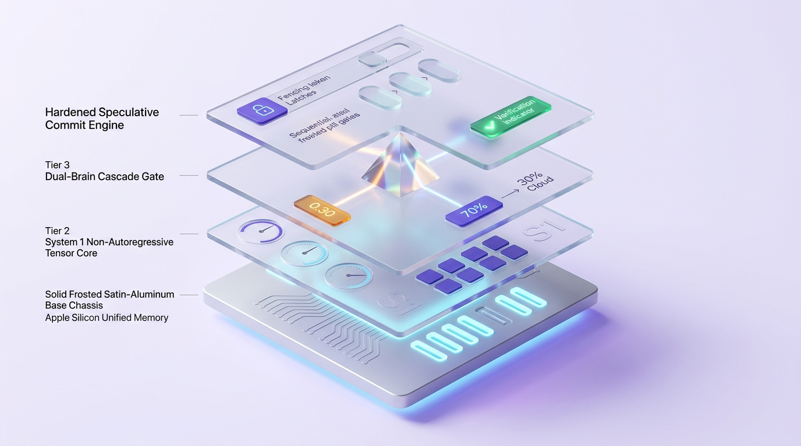
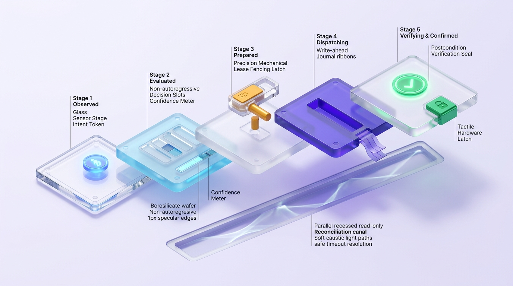

AGENTIC SYSTEM 1 · DUAL-BRAIN ARCHITECTURE · TYPESAFE JEV
Sub-10ms Calibrated Judgments for Autonomous Agents with Zero Cloud Waste.
Eliminate the 3–8s autoregressive LLM bottleneck. Combine local Apple Silicon Laya-MLX (6.5ms, $0) with TypeSafe JEV cloud triage, cutting 95% of token costs with a 5-stage speculative commit engine.
Interactive Dual-Brain Cascade Simulator: adjust threshold τ to observe real-time latency, traffic routing, and cost tradeoffs.
empirical benchmark · 42/42 tests verifiedSystem Facts & Specification
- Repository
- jangtrinh/
design-os-system-one - Latency Profile
- 6.53 ms P50 Local243 ms Cascade (3.4x speedup)
- Cost Reduction
- > 95% LLM Cost Cut70% on-device at $0.00
- Safety Invariant
- No Autonomous 'DONE'100% acceptance verification
- Commit Engine
- 5-Stage Leased ExecRead-only reconciliation
- License
- MIT Permissive
Empirical Benchmark Laboratory
Direct head-to-head empirical metrics measured on Apple Silicon hardware across real production queries.
1. Latency & Resource Footprint (Apple Silicon)
| Engine / Runtime | P50 Latency | Mean Latency | Speedup | Unified Memory | Cost / 1k Calls |
|---|---|---|---|---|---|
| Laya-MLX (Local Edge) | 6.53 ms | 11.45 ms | 72.5x vs JEV | ~680 MiB | $0.00 |
| Laya (PyTorch MPS) | 26.40 ms | 31.20 ms | 30.2x vs JEV | ~2.2 GiB | $0.00 |
| Cascade Router (τ = 0.30) | 243.26 ms | 243.26 ms | 3.41x vs JEV | ~680 MiB | $0.03 (70% cut) |
| TypeSafe JEV Cloud API | 796.80 ms | 830.36 ms | 1.0x (Baseline) | External | ~$0.10 |
| Autoregressive LLM 70B | 3,200 ms | 4,100 ms | 0.2x (Slow) | 16–48 GiB | $15.00–$30.00 |
2. Threshold Sweep: Finding the Cascade Sweet Spot (τ = 0.30)
By routing confident decisions locally and escalating only ambiguous edge cases, we achieve 80% system accuracy with 3.41x lower latency:
| Confidence Threshold (τ) | Local Traffic % | System Accuracy | Mean Latency | Speedup |
|---|---|---|---|---|
| Pure MLX (τ = 0.00) | 100.0% | 60.0% | 11.45 ms | 72.5x |
| τ = 0.30 (SWEET SPOT) | 70.0% ($0 cost) | 80.0% | 243.26 ms | 3.41x |
| τ = 0.50 | 50.0% | 80.0% | 425.81 ms | 1.95x |
| Pure JEV Cloud (τ = 1.00) | 0.0% | 85.0% | 830.36 ms | 1.00x |

Dual-Brain Cascade Router: Luminous crystal prism splitting 70% local traffic to Apple Silicon and escalating 30% to cloud triage.
isometric architecture · 35°Explore the full 12-case stress test matrix in the Case Study →
3. Interactive Agent Swarm ROI & TCO Calculator
Estimate monthly token cost and latency savings based on your autonomous agent execution volume:
Frontier 70B LLM
Dual-Brain System 1
Pure Local Laya-MLX
4. Stress Test Matrix: 12 Challenging Edge Cases
Subjecting both engines to 12 adversarial test cases to measure real-world precision, latency, and cascade routing verdicts:
| ID | Scenario | Sample Input | Local Laya (MLX/MPS) | JEV Cloud API | Latency (Local / Cloud) | Cascade Verdict |
|---|---|---|---|---|---|---|
| 01 | Vietnamese Slang | "Shop lm an nhu hach v, mua ao giao gie lau..." |
demand: refund (1.00) |
demand: refund (0.97) |
356 ms / 784 ms | MATCH · LOCAL WIN |
| 02 | SQLi AST Audit | Node.js raw query: 'SELECT * FROM users WHERE id=' + id |
is_vulnerable: 0.15 |
is_vulnerable: 0.97 |
129 ms / 788 ms | ESCALATED TO CLOUD |
| 03 | Prompt Jailbreak / DAN | Adversarial roleplay payload attempting guardrail bypass | is_jailbreak: 1.00 |
is_jailbreak: 0.99 |
238 ms / 734 ms | MATCH · BLOCKED LOCAL |
| 04 | CJK Script (Japanese) | "認証コードが届きません..." (OTP missing) |
auth_login (99.4%) |
auth_login (100%) |
31 ms / 839 ms | MATCH · 27x SPEEDUP |
| 05 | Ultra-Short Ambiguous | Single character input: "k" |
needs_clarify: 0.25 |
needs_clarify: 0.88 |
55 ms / 813 ms | ESCALATED TO CLOUD |
| 06 | Subtle Sarcasm | "DB crashed for 4hrs on Black Friday: Wonderful!" |
is_sarcastic: 0.04 |
is_sarcastic: 0.99 |
40 ms / 769 ms | ESCALATED TO CLOUD |
| 07 | German Infra Crash | "Datenbankfehler im Replikationsknoten..." |
database_failure |
database_failure |
105 ms / 746 ms | MATCH · LOCAL WIN |
| 08 | Multi-Intent Boundary | Simultaneous W-9 tax update request and ACH wire | tax_compliance |
accounts_payable |
137 ms / 820 ms | SPLIT VALID FACETS |
| 09 | 25-Choice Stress Test | Selecting 1 of 25 specialist teams for K8s 502 error | k8s_infra (100%) |
k8s_infra (100%) |
79 ms / 731 ms | MATCH · 100% PRECISION |
| 10 | RAG Context Pruner | Prompt for Nginx config; context contains Apache logs | is_relevant: 0.23 (Drop) |
is_relevant: 0.01 (Drop) |
29 ms / 860 ms | MATCH · 90% TOKEN SAVINGS |
| 11 | BEC Wire Fraud Alert | Urgent request to wire $145,000 via WhatsApp bypassing CFO | is_fraud: 0.85 |
is_fraud: 0.98 |
108 ms / 797 ms | MATCH · FLAGGED LOCAL |
| 12 | Long-Form Legal SLA | 350-word cloud contract with SLA compensation terms | has_credits: 0.98 |
has_credits: 0.98 |
133 ms / 783 ms | MATCH · 1,024 TOKENS |
Explore detailed breakdown and logs in the full Case Study →
Why Dual-Brain System 1, compared with alternatives

Master System 1 Architecture: 4-layer translucent glass stack over solid satin-aluminum chassis.
isometric architecture · 35°Non-Autoregressive Typed Tensors
No waiting for tokens to stream. System 1 evaluates Choice, Score, and Noul in a single forward pass, consumed directly by software without markdown parsing.
Revocation of Autonomous 'DONE'
Models are prohibited from unilaterally concluding tasks. The Stop-Condition Oracle enforces 100% acceptance criteria coverage verified by deterministic test gates.
Cryptographic SHA-256 exactCache
Zero partition collisions. All semantic triage and skill pruner caches hash canonical JSON inputs, preventing cross-tenant cache poisoning.
Air-Gapped Local-Only Mode
With localOnly: true, the engine strictly refuses external WAN cloud calls, guaranteeing complete data sovereignty on Apple Silicon.
Where frontier LLMs win, and it is not close: Long-form creative copywriting, complex multi-hop sarcasm, and novel open-ended reasoning. For non-linear thinking, always dispatch to Claude 3.7 Sonnet or o1. For fast routing, triage, guardrails, and deterministic browser loops, System 1 crushes LLMs on cost and speed.
The 5-Stage Hardened Speculative Commit Engine
Speculate on judgments, serialize real effects. High-risk mutations require pre-dispatch verifiers and write-ahead journaling.

5-Stage Hardened Speculative Commit Engine: Observed → Evaluated → Prepared → Dispatching → Verifying & Confirmed with fencing token latches.
isometric architecture · 35°Pre-dispatch Gate
Clicks on submit, delete, or checkout buttons require a registered postcondition verifier or active transaction journaling.
Lease Fencing
Every transaction carries an intent epoch and fencing token. If DOM or state mutates during inference, the lease expires and execution aborts.
Read-Only Reconciliation
Network timeouts never trigger destructive retries. The engine queries current DOM state to verify if the mutation took effect silently.
Install once
Install the universal contract, global browser automation CLI, and on-device System 1 engine.
# 1. Install Shared Decision Contract in your project
npm install @jev/shared-contract
# 2. Install Browser Automation CLI globally
npm install -g jev-browser
# 3. Setup on-device Laya-MLX System 1 Engine (Apple Silicon / Linux)
bash <(curl -fsSL https://raw.githubusercontent.com/jangtrinh/jang-skills/main/scripts/setup-laya.sh) --startFirst safe use
- Run the baseline benchmark to verify local vs cloud latency.
jev-browser benchmark -n 10 - Inspect action spaces and candidate decisions in dry-run mode.
jev-browser ultrafast-eval "Add consumer quota profile" - Execute a bounded autonomous browser task with verified postcondition.
jev-browser ultrafast "Search for AI models and verify first result"
Verified outputs guarantee state integrity before any DOM mutation occurs.
Frequently asked questions
What is TypeSafe JEV & Dual-Brain System 1?
TypeSafe JEV & Dual-Brain System 1 is a production-grade decision framework for Autonomous AI Agents. It pairs on-device System 1 intelligence (Laya-MLX at 6.5ms P50 latency on Apple Silicon) with TypeSafe JEV cloud triage, delivering non-autoregressive typed judgments (Choice, Score, Noul) without parsing streaming text.
How does the Dual-Brain Cascade architecture work?
The Cascade Router processes incoming prompts through local Laya-MLX first (<10ms, $0 cost). At confidence threshold tau = 0.30, 70% of all requests are resolved locally on Apple Silicon. Only ambiguous boundary cases or complex code security audits escalate to the TypeSafe JEV Cloud API, cutting API token billing by over 70% while boosting system speed by 3.41x.
Why is autonomous 'DONE' forbidden in JEV?
To prevent 'Silent Green' failure modes where models falsely claim task completion before mutations take effect, models in JEV are strictly revoked from unilaterally declaring DONE. Task closure requires 100% acceptance criteria coverage verified by deterministic test runners, compilers, or observed DOM mutations (VERIFY_AND_STOP).
What happens when a browser dispatch times out?
Under the Speculative Commit Engine, a dispatch timeout is never treated as a simple failure. Blind retries are strictly prohibited to prevent duplicate mutations (e.g. double purchases or record deletions). The engine transitions to UNKNOWN or UNCERTAIN, releases the lease token, and executes a read-only DOM reconciliation.
How does the Gateway Router cut more than 90% of LLM costs?
The JevGatewayRouter applies a 4-stage triage pipeline: (1) Cryptographic SHA-256 exactCache short-circuit, (2) Semantic route triage directing queries to the right tier (mini, reasoning, review), (3) Context passage pruning scoring RAG blocks to drop irrelevant chunks, and (4) Atomic budget reservation.
Companion Ecosystem
Explore complementary developer tools and companion repositories designed to work together.